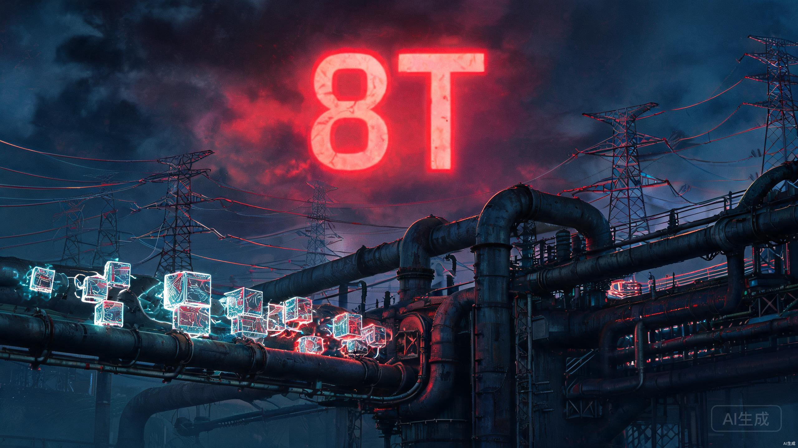

8万亿Token不是喜报，是AI模型变成水电煤
8万亿Token。
这是2026年8月1日，DeepSeek V4-Flash正式版上线后的单日处理量。5600万本《三体》的文字量，24小时内被一个模型吞下去又吐出来。
所有自媒体都在喊"DeepSeek赢了""Token战争胜负已分""中国AI碾压"。
说真的，我看完这些标题，第一个反应不是兴奋，是心里咯噔了一下。
因为8万亿这个数字，不是喜报。它更像一份诊断书，上面写着，AI模型正在变成水电煤。
先看看发生了什么
更刺眼的是榜单。OpenRouter全球调用量前五，清一色中国模型。DeepSeek V4-Flash、小米MiMo-V2.5、腾讯混元3、DeepSeek V4 Pro、智谱GLM-5.2。中国模型总份额63.5%，美国35.5%，差距连续十四周拉大。
OpenAI核心产品负责人Tibo跑到OpenCode评论区给Luna打广告，被开发者一句话怼回去，"我们希望得到DeepSeek的价格。"
场面一度非常尴尬。
8万亿Token里藏着什么
说说我的判断。
8万亿Token看起来是DeepSeek的高光时刻，但你把数字掰开看，会发现一件让人不安的事。8万亿里5万亿是白送的。剩下3万亿付费的，DeepSeek的定价是什么水平？缓存命中时输入0.2元/百万Token，输出2元/百万Token。缓存命中率98%，也就是说绝大部分调用只按标价的2%计费。
这个价格低到什么程度？第三方实测，DeepSeek V4-Flash单次任务平均成本3美分。海外同类高端模型3.5美元。差了一百倍。
一百倍。
当你把价格打到对手的百分之一，你不是在竞争，你是在把行业拖进一个新阶段。这个阶段叫commodity化，中文叫大宗商品化。
大宗商品有个特点，谁家的都差不多，买谁主要看价格。石油、钢铁、水泥、电力。你不会在乎你家插座里的电是哪个电厂发的，因为它都一样。
AI模型正在变成这个样子。
DeepSeek V4-Flash
智能指数50分
单次任务3美分
缓存折扣98%
284B总参/13B激活
GPT-5.6 Luna
智能指数51分
降价后仍贵60%
缓存折扣90%（行业均值）
OpenAI闭源架构
DeepSeek V4-Flash拿50分，GPT-5.6 Luna拿51分。差1分。但DeepSeek便宜了60%。如果你是一个要做批量文档处理、代码辅助、智能体自动化的开发者，你会选谁？答案写在OpenRouter的榜单上了。
当模型之间的性能差距缩小到可以忽略，价格就成了唯一变量。而当价格成了唯一变量，模型本身就从"产品"变成了"基础设施"。
这就是为什么我说8万亿Token不是喜报。
价格坍缩的数学题
我把这个判断拆成三个层面讲。
第一个层面，价格到底怎么坍的。
DeepSeek的98%缓存命中折扣是个很恐怖的数字。业内普遍的缓存折扣是90%，也就是命中缓存按标价10%计费。DeepSeek直接干到2%。如果一个开发者的调用模式高度重复，比如批量处理相似格式的文档，他的实际成本可以低到几乎免费。
OpenAI怎么追？Luna降了80%，看起来力度很大。但降价后的Luna，单任务成本仍比DeepSeek高约60%。因为DeepSeek不只是单价低，它的缓存机制把实际支出又压下去一个数量级。
这不是价格战，这是价格屠杀。OpenAI降80%还追不上，不是OpenAI不够努力，是DeepSeek选了一条完全不同的成本曲线。MoE架构2840亿参数只激活130亿，等于你有2840个专家但每次只请130个出来干活，其他都在休息。推理成本天然就低。
再加上98%的缓存折扣，DeepSeek实际上在告诉整个行业一件事，模型推理的边际成本可以逼近零。
前五全是中国模型，不是中国赢了
第二个层面，前五全是中国模型的含义。
很多人看到OpenRouter前五全是中国模型，第一反应是民族自豪感。我理解这种情绪，但这不是正确的读法。
前五全是中国的，不等于中国模型性能最强。它意味着中国模型在"性价比"这个维度上碾压了所有对手。而性价比碾压的底层逻辑，是价格足够低，低到开发者不需要犹豫。
想想看，如果DeepSeek V4-Flash和GPT-5.6 Luna性能差1分，但价格差60%，任何一个理性的开发者都会选便宜的。不是因为便宜的好，而是那1分的差距不值得多花60%的钱。
所以前五全是中国模型，翻译成人话就是，中国模型把价格打到了让性能差异变得不重要的程度。这不是技术胜利，是成本结构胜利。而成本结构胜利的终点，就是commodity化。
中国模型份额63.5%，美国35.5%。但你再想想，63.5%的份额背后，利润率是多少？DeepSeek V4-Flash单次任务3美分，扣掉算力成本、带宽、运营，利润能有多少？当你的价格是对手的百分之一，你的利润也大概率是对手的百分之一。
份额大不等于赚钱多。水电煤的份额都很大，但电厂和自来水公司的利润率，你心里有数。
5万亿白送意味着什么
第三个层面，也是最关键的数字。
8万亿Token里5万亿是免费的。这个数字很多人一笔带过，但我觉得这才是全文最重要的一个数。
5万亿免费意味着，DeepSeek的8万亿里，超过60%是没有收入的。这些免费调用是在培养用户习惯，抢占开发者心智。跟互联网早期的免费策略一模一样，先用免费把人圈进来，等他们离不开你了再变现。
但问题是，当你已经把付费价格打到3美分，你未来的变现空间在哪？一个已经习惯了3美分单次任务的开发者，你涨价他会立刻跑路，因为旁边的智谱GLM-5.2也便宜，小米MiMo-V2.5也在等着。
这就像共享单车大战。满大街免费骑车的时候，谁都觉得是好事。等需要赚钱的时候，发现用户已经被9.9包月惯坏了，涨价是不可能的。
我不是说DeepSeek做错了。低成本策略在当下是对的。但8万亿Token里有5万亿白送，这个数字提醒我们，Token经济的繁荣，很大一部分是补贴出来的。
主流观点哪里不对
现在说说几种主流说法的问题。
第一种，"中国AI赢了"。前面已经讲过了，份额不等于利润，价格优势不等于技术优势。DeepSeek V4-Flash在Agent任务上确实强，但在深度逻辑推理、复杂多模态理解上，跟全球顶尖旗舰模型仍有差距。赢了一场价格战不等于赢了整场AI竞赛。
第二种，"Token战争胜负已分"。太早了。7月31日才上线的模型，8月3日就说胜负已分？OpenAI上周Luna降价后首次上榜就暴涨456%，说明降价是有效的。这场战争离结束还远，现在只是第一轮大规模交锋。
第三种最值得聊聊，就是OpenAI高管评论区翻车这件事。很多人把它当笑话看，Tibo亲自下场推销Luna，被怼"我们要DeepSeek的价格"，社死现场。
但你换一个角度想。OpenAI的高管跑到一个开源开发者平台的评论区去打广告，这件事本身就说明了什么？OpenAI慌了。不是慌DeepSeek的技术，是慌DeepSeek的价格正在重塑开发者的预期。
当一个OpenAI高管不得不亲自下场解释"我们也很便宜"的时候，定价权已经不在OpenAI手里了。定价权在DeepSeek手里，在OpenRouter的榜单上，在全球开发者用脚投票的行为里。
Tibo不是在卖Luna，他是在试图夺回定价权。但他失败了，因为开发者回的不是"你的模型不够好"，而是"你的价格不够低"。这句话翻译成商业语言就是，你的产品已经变成了大宗商品，而大宗商品的战场上，便宜就是一切。
接下来会发生什么
聊聊我的预判，也可能我错了。
第一，模型层的利润会继续坍缩。DeepSeek已经把天花板捅穿了，其他模型要么跟进降价，要么被挤出市场。就在今天，Qwen3.8-Max发布了，2.4万亿参数，95B激活，而且要开源Max级权重。一个2.4T参数的顶级模型白送，连最强模型都在走向commodity化。当最强的模型免费，中端模型的价格只会更低。
| 事件 | 时间 | 信号 |
|---|---|---|
| DeepSeek V4-Flash正式版 | 7月31日 | 98%缓存折扣，推理成本逼近零 |
| OpenAI Luna降价80% | 7月31日 | 降价后仍贵60%，定价权丢失 |
| DeepSeek单日8万亿Token | 8月3日 | 5万亿免费，3万亿付费 |
| Qwen3.8-Max开源Max权重 | 8月3日 | 2.4T参数顶级模型走向免费 |
| OpenRouter前五全是中国模型 | 8月3日 | 中国份额63.5%，美国35.5% |
第二，钱会往应用层跑。这个逻辑不复杂。当模型本身不再值钱，值钱的是用模型做事的人。微软Copilot付费席位突破3000万，北美四大云厂二季度资本开支合计7325亿美元。这笔钱不是在买模型，是在买模型之上的应用和工作流。
第三，会有一批模型公司死掉。不是现在，但当VC发现模型层不再有超额利润的时候，资金会迅速收缩。那些既没有DeepSeek的成本优势，又没有应用层收入的模型公司，会非常难受。
我有时候觉得，AI行业正在经历通信行业2001年经历的事。光纤产能过剩，带宽价格崩塌，铺设光缆的公司大量破产。但正是廉价带宽催生了Google、Amazon、Netflix。光纤铺设者的尸骨上，长出了整个互联网应用层。
AI模型可能就是新时代的光纤。
对你来说意味着什么
如果你是开发者，这件事对你有利。模型越来越便宜，你能做的事越来越多。享受低价格的同时，别忘了想一个问题，当模型免费了，你的核心竞争力是什么？是调模型的能力，还是在模型之上解决具体问题的能力？
如果你是AI从业者，8万亿Token是一面镜子。它照出来的不是"我们赢了"，而是"我们的利润正在消失"。赢家不是做模型的人，是用模型的人。
8万亿Token。5万亿白送。3万亿付费，每次调用3美分。
这不是胜利的号角。这是AI模型变成水电煤的第一声汽笛。
谢谢你看我的文章。
数据来源：OpenCode官方发文（8月3日）/ OpenRouter周报 / 第一财经 / 新浪财经 / 腾讯新闻 / Qwen官方博客（8月3日）/ Artificial Analysis